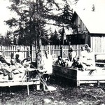

Prisoner: Lev Kopelev
“Led one night to be interrogated, I noticed a bookcase against the wall just before we came to a sharp turn of the dimly lit corridor. On the way back to my cell, with my sleepy guard walking behind me, I put on speed just before turning the corner and, without stopping, scooped up as many books as I could, hiding them under my overcoat. I could read during the day. They had not gotten around to making a peephole in the door of our cell, and by the time the guard would turn the key in the lock and slide open the bolt, I would have the book I was reading buried in straw, where the other books were hidden."

White Sea Canal Hospital Patients
Gulag Medicine
Malnutrition, extreme environmental conditions, dangerous work, and prevalent violence made interaction with the Gulag’s medical services both likely and critical to the chances for survival. Gulag authorities put minimal resources into camp infirmaries and hospitals, staffing them with prisoners and strictly limiting the number of prisoners who could be excused from work on a daily basis for health reasons. The ill were all viewed skeptically as potential malingerers avoiding productive labor—a charge that was often true as we know from the frequent reports of prisoners intentionally injuring themselves to avoid being sent out to heavy labor.

For a prisoner who was truly ill, getting timely and caring medical treatment really was a key to survival. Many memoirists recall an act of mercy from someone in the medical service who kept them out of work at a vulnerable moment allowing them to regain their health and survive. Eugenia Ginzburg’s story is exemplary: “What induced Dr. Klimenko not only to keep me in the infirmary more than a month, so that I could recover fully from the journey, but also to bring me high-calorie food almost every day from her own home?”

Prisoners in Cots at Vorkuta
The medical service also offered one of the plum jobs in the camp system, and prisoners competed to become orderlies, medical assistant and even doctors in order to avoid the draining and dangerous heavy labor of the Gulag. Often, the prisoners who secured these jobs had no medical training. Janusz Bardach, for example, managed to survive the harsh conditions at Kolyma in part by passing himself off as a third-year medical student and earning a job as a medical assistant in the camp.